Launch vehicle engineering student. I size, simulate and test space systems, from a rocket stage to a satellite's sky coverage.
I have worked on a semi-reusable launcher concept with an ArianeGroup engineer, on the mission architecture of a space telescope at Observatoire de Paris, and on Higgs boson data at CERN. I also train as an analog astronaut: three missions so far, in Poland, Cologne and Dubai.
Currently seeking6-month end-of-studies internship from 1 February 2027Space sector › launchers › sizing & architecture / design, or propulsion
Two internships and two launcher projects, from newest to oldest.
Starting soon5th year · 2026/27ESTACA annual project For ArianeGroup, supervised by an ArianeGroup engineer
Reusable upper stage: conceptual design and viability study
ArianeGroup is studying reusable upper-stage concepts for a future fully reusable European launcher. My project takes one of the most promising concepts, a design from the late 1960s in the United States, and adapts it to a European use case. The goal is to judge its technical and economic viability.
Planned work
Literature review and high-level performance reconstruction of the historical concept.
Critical analysis, then high-level requirements for a European need.
Operational, functional and physical architecture.
Trade-offs and preliminary design, with CAD and internal layout.
Characterisation of atmospheric re-entry, with CFD support from the tutor.
Viability analysis, conclusions and perspectives, planned on a Gantt chart.
4th-year internship · 2025/26LUX, Observatoire de Paris (CNRS, PSL) Paris, France Supervisor: Dr. David Valls-Gabaud, CNRS
Assistant engineer: mission architecture of the MESSIER space telescope
MESSIER is a satellite concept that maps the sky in ultraviolet and optical light at extremely low surface brightness, down to 37 mag/arcsec². I built the numerical chain that tests whether its orbit, scan strategy and ground segment can cover the whole sky.
91.7%of the observable sky covered in six months
77.7%useful observing time after exclusion masks
1,400kmreference sun-synchronous orbit, i ≈ 100.42°
56–88°β angle, always above the 55.1° eclipse limit
8.5minaverage contact per pass over five ground stations
Built a Python pipeline combining SGP4 propagation, JPL DE421 ephemerides, Skyfield and Astropy, and simulated 181 days of flight.
Fixed a critical memory bottleneck by chunking the computation and casting to float32.
Applied a WISE-inspired scan strategy with South Atlantic Anomaly and lunar exclusion masks, and found two numerical artefacts in the coverage maps, which led to the recommendation of HEALPix pixelisation for Phase A.
Sized the ground segment over five stations (Kiruna, Redu, Maspalomas, CONAE, Perth) at 5° and 10° elevation masks.
Wrote Blender scripts that animate the satellite and reveal the sky as it is observed.
Estimated the mission's carbon footprint across European launchers (launch accounts for 87–95%) and showed that the 1,400 km altitude limits optical contamination from mega-constellations.
Presented intermediate results to researchers, including colleagues from UCLA and UC Santa Cruz.
Blender render of the satellite and the sky survey
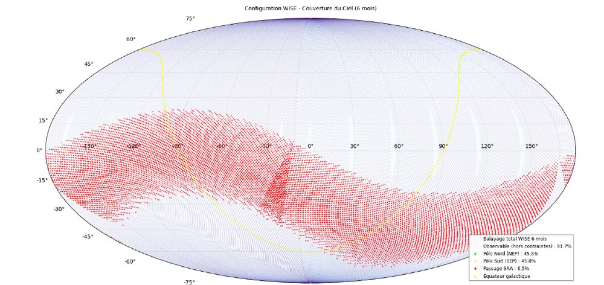
Six-month sky coverage on a Mollweide map
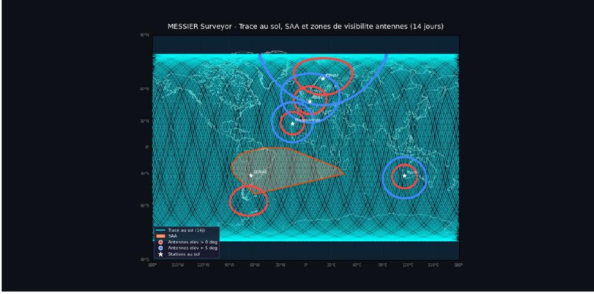
Fourteen-day ground track and station visibility
4th year · 2025/26ESTACA annual project Supervised by an ArianeGroup engineer Team of four
NEL: New European Launcher
We designed a preliminary concept for a semi-reusable three-stage launcher aimed at a 6-tonne payload to a 400 km low Earth or sun-synchronous orbit.
3stagesLOX/CH4 recoverable first stage, solid second stage, LOX/LH2 third stage
6tpayload to LEO / SSO
400kmtarget orbit altitude
Corrected and consolidated the vehicle mass budget.
Carried out structural dimensioning and the landing-leg analysis of the recoverable stage.
Calculated and simulated the design in code and modelled the launcher in SolidWorks and CATIA 3DEXPERIENCE.
Studied the effect of a hypothetical launch-site change from Kourou to Andøya.
Led the second-semester documentation: the full technical report and a 25-slide deck.
Mass budgetStructuresRecoverable stageSolidWorksCATIA 3DEXPERIENCEPython
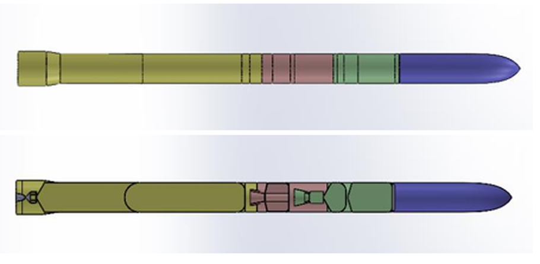
SolidWorks model of the NEL launcher: external view and cross-section
Sept 2024 – Feb 2025 · 6 monthsCERN Geneva, Switzerland · on site 3rd-year internship
Particle physics research intern: Higgs boson research project
Six months inside an international research environment, working with physicists and engineers around the Large Hadron Collider.
Helped analyse proton–proton collision data for studies of Higgs boson production and decay channels.
Contributed to data-processing and automation tools for large experimental datasets.
Supported studies of the Standard Model and searches for new physics.
Complex experimental dataPhysical modellingSimulationAutomationInternational team
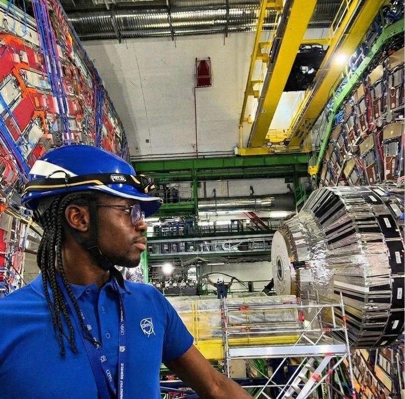
Inside a detector cavern at CERN
Analog astronaut
Three missions, three places, one thread: doing real science and real operations in a small international crew.
1Poland · May 2026Analog Astronaut Training Center LUNA AM 107 / Space Ready 2 Crew from France, Poland and Ukraine
Regolith science in a habitat
I represented France in a multi-day analog mission. My science programme was a ten-experiment study of a lunar regolith simulant, and I completed three of the ten experiments on site.
3of 10regolith experiments completed on site
1.250g/cm³initial density of the simulant
1.693g/cm³density under a 1,000 g load
The compaction values match basaltic-pond regoliths from Luna 16 and Apollo 11, 12, 15 and 17.
I placed the simulant against real lunar sample data using the principal-component study of Katzer et al. (2024).
I wrote the full scientific report and protocols for the further tests: compressive strength, friction, angle of repose and abrasion on EVA textiles.
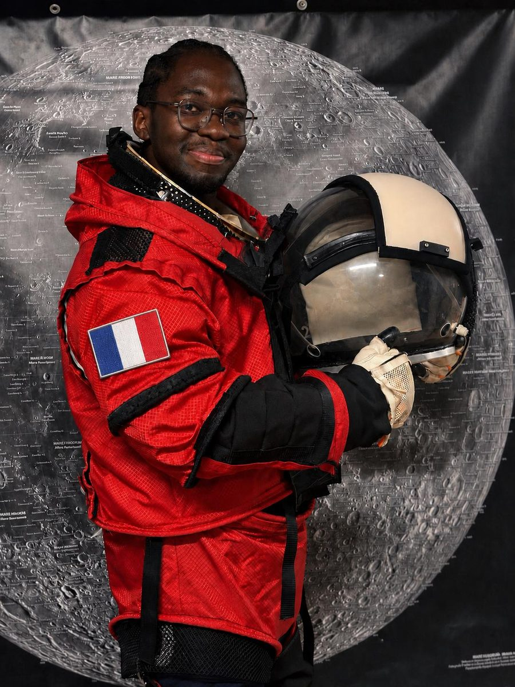
Analog astronaut training, mission 1
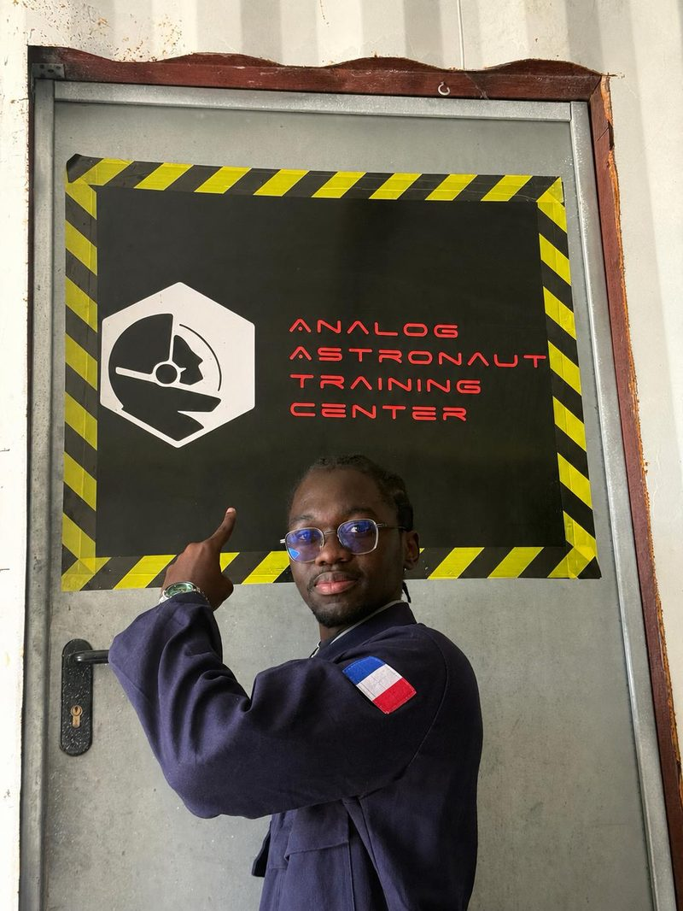
Entrance of the training center
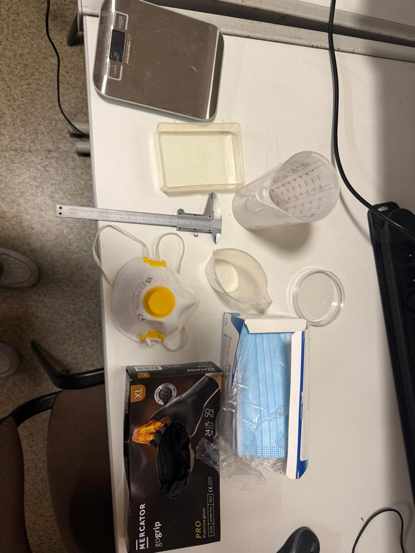
Measurement kit: scale, caliper, cups and protective gear
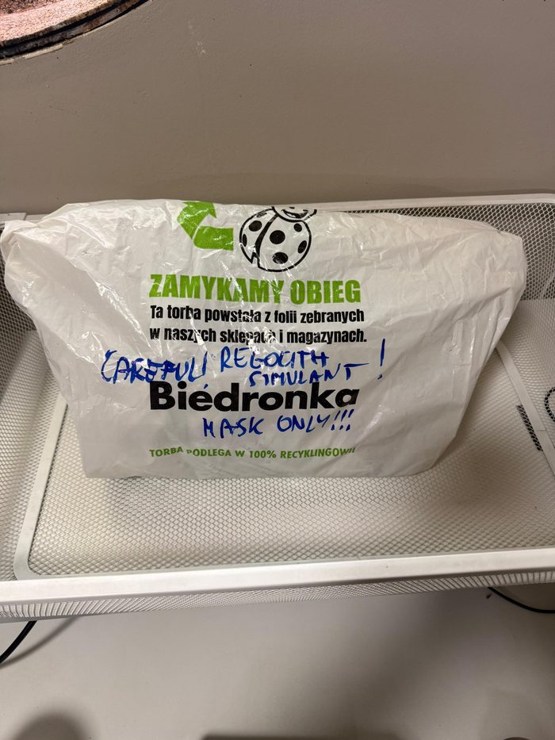
Simulant bag, marked "Mask only!"
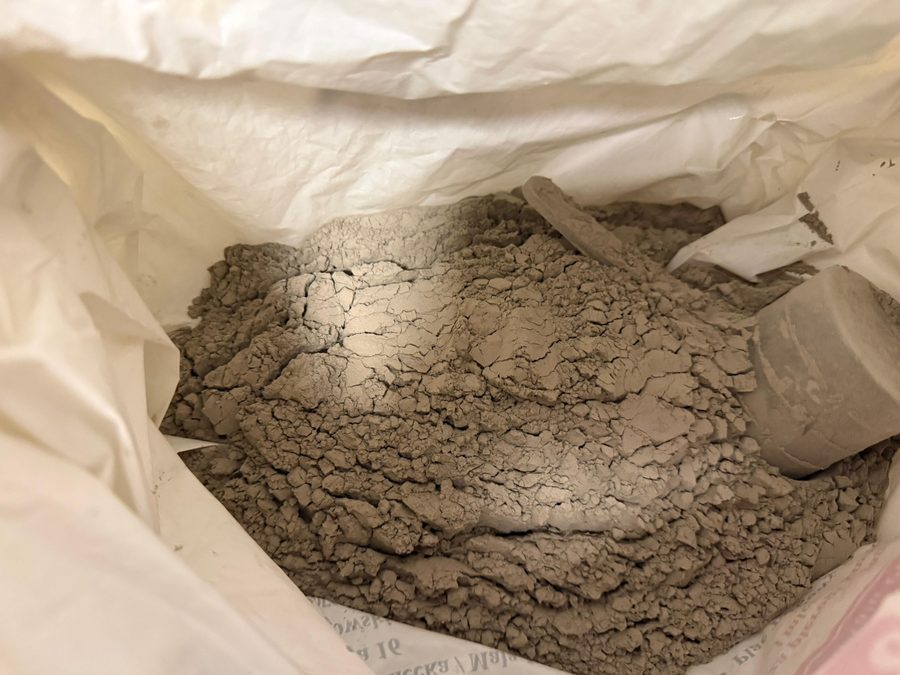
Lunar regolith simulant
2ESA LUNA · Cologne, GermanyESA–DLR lunar analogue facility
Finishing the research at ESA LUNA
After the first mission I sent my research to ESA LUNA. The team had me complete the seven remaining experiments of the programme, which turned a three-test study into a full ten-test characterisation.
Followed the written protocols, from sample preparation to measurement and data logging.
Worked with a new team and a new facility, using what I had learned in Poland.
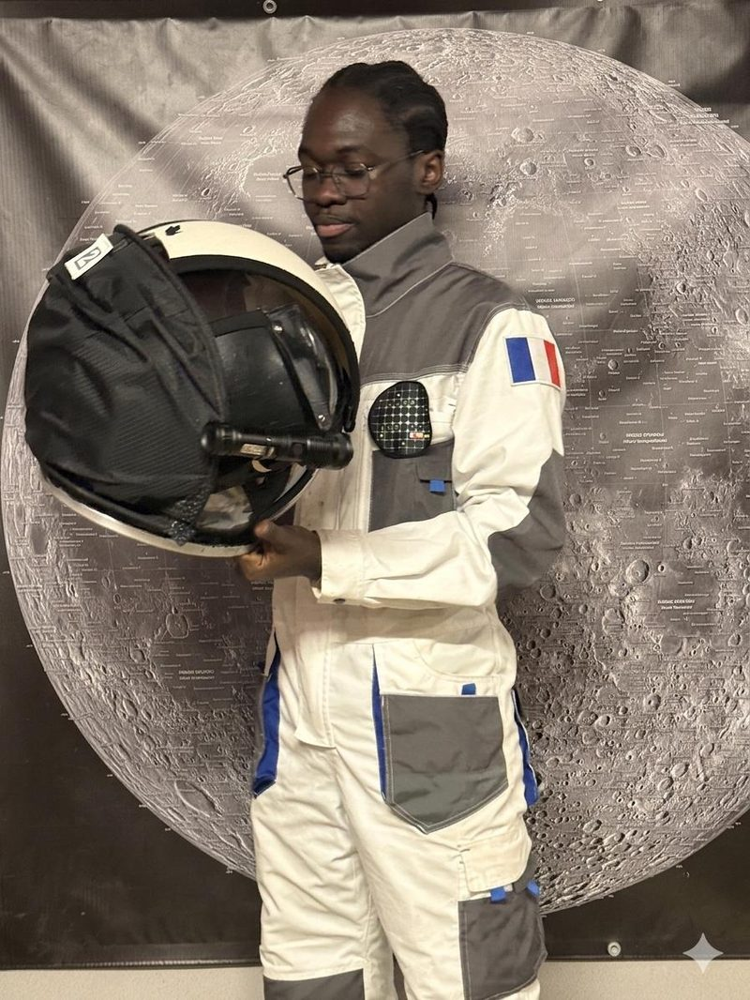
Analog astronaut training, mission 2
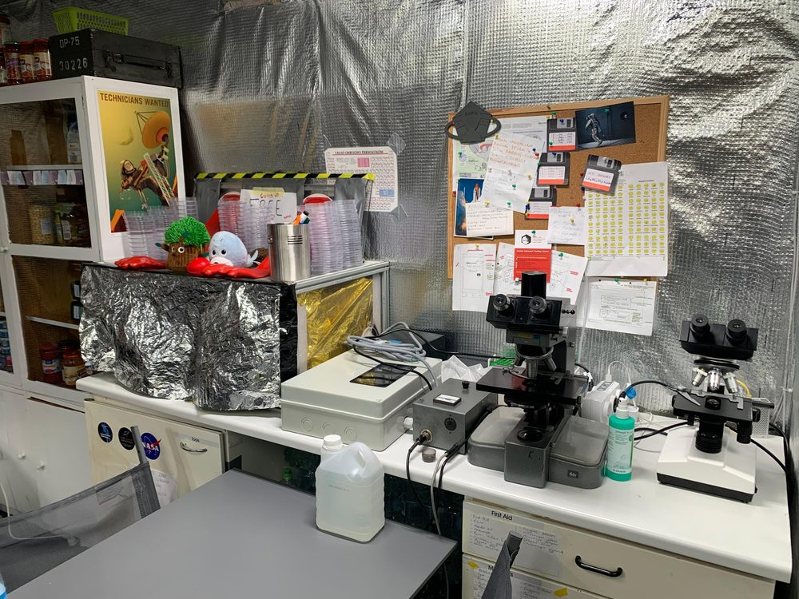
Laboratory corner
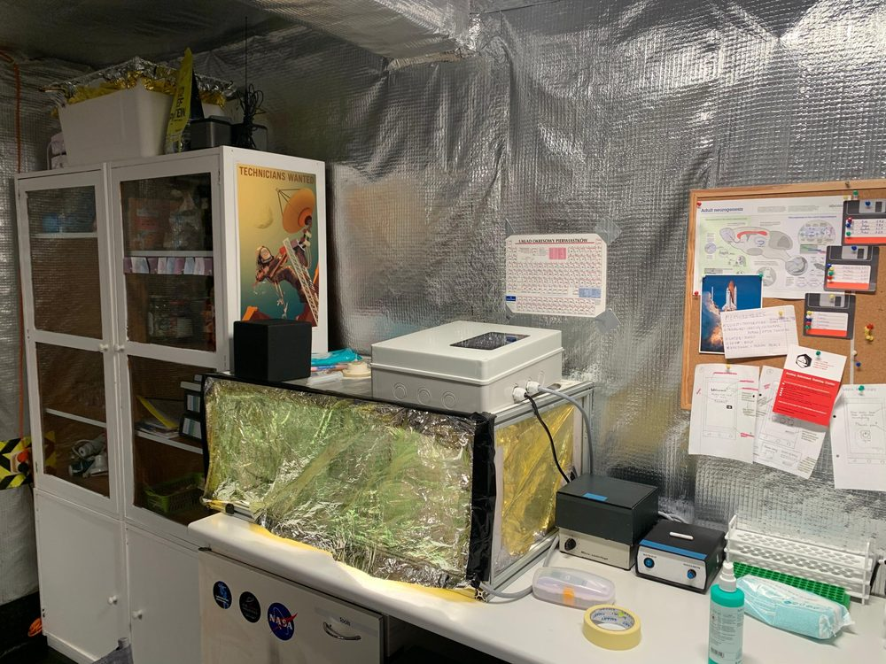
Experiment bench
3DubaiEVA training
Extravehicular activity training
My third mission was a training in Dubai focused on extravehicular activity (EVA): working outside a spacecraft in a pressurised suit, where every movement is planned and every procedure matters.
Suit operations and procedures for working in a pressurised EVA suit.
Engineering tasks under suit constraints, including welding practice.
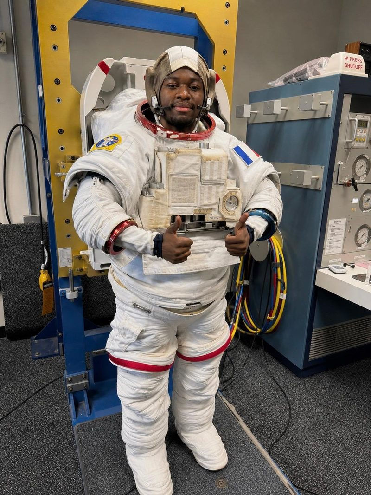
EVA suit training in Dubai
What international missions taught me
Team spiritAdaptation to new crew matesCross-cultural communicationStress managementDecision-making under pressureDiscipline with proceduresOperational safetyTime and resource managementResilience in confined spacesConflict preventionScientific methodMission reportingAutonomy
Outreach: talking space with students
At a science fair I explained space engineering to students using drawings and plans. Explaining a design to people who don't know the field is a skill I use in every team.
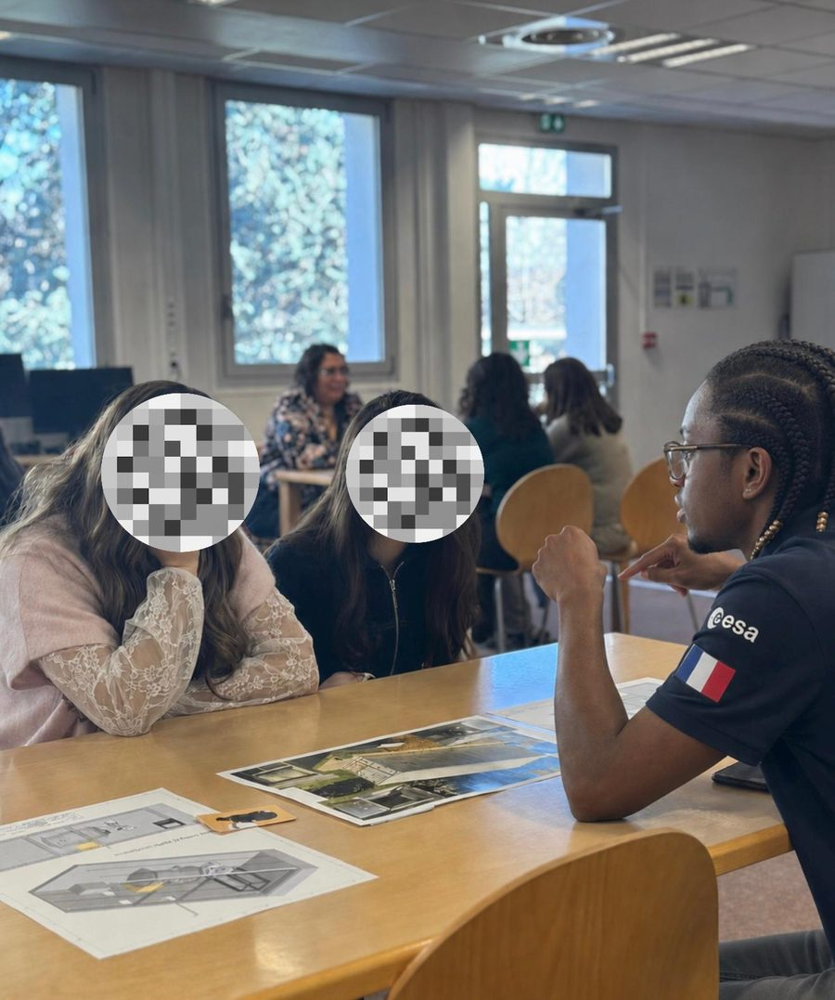
Science fair stand
Beyond work
What I do outside the lab and the classroom.
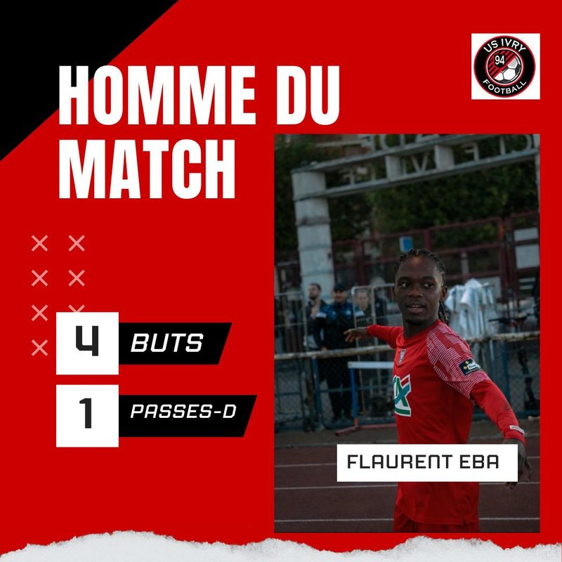
Man of the match for US Ivry: 4 goals and 1 assist
Football at National 3
I played for US Ivry as a right winger in National 3, the fifth tier of French football. A winger works the touchline: fast decisions, repeated sprints, and a pass or a shot at the end of each run.
Team playDisciplineResilienceSpeed of decisionPerforming under pressurePhysical conditioningCommunication on the pitchAccepting feedback
Passions
SpaceAstrophysicsTravelHikingReadingSwimmingFootballVideo games
Research & reports
Written work I can share in full on request.
Internship report · 2026
Simulation, optimisation and validation of the MESSIER mission architecture
Orbit, scan strategy, ground segment and environmental balance of a space telescope. 35 pages, with a critical analysis of the method's limits.
Analog mission report · 2026
Mechanical characterization of a simulated regolith
Compaction test results, a mineralogical comparison with Apollo and Luna samples, and protocols for further experiments.
TIPE · CPGE · July 2023
Geolocation in a crisis and GPS accuracy
The mathematics of GPS positioning: trilateration, linearisation, least-squares estimation, covariance and DOP, and Kalman filtering to fuse measurements over time.
Education
From a maths and physics specialisation to a launcher engineering degree, in three steps.
Engineering degree · up to 5th yearESTACA, Space department Specialisation: launchers
I joined ESTACA with a passion for building launchers, propulsion and robotics, and chose the space department and the launcher track.
3rd year
Six-month research internship at CERN on Higgs boson data.
4th year
NEL launcher project with ArianeGroup, then the MESSIER mission-architecture internship at Observatoire de Paris. Coursework in space mechanics and launcher aerodynamics.
5th year
Reusable upper-stage study for ArianeGroup, and this internship search.
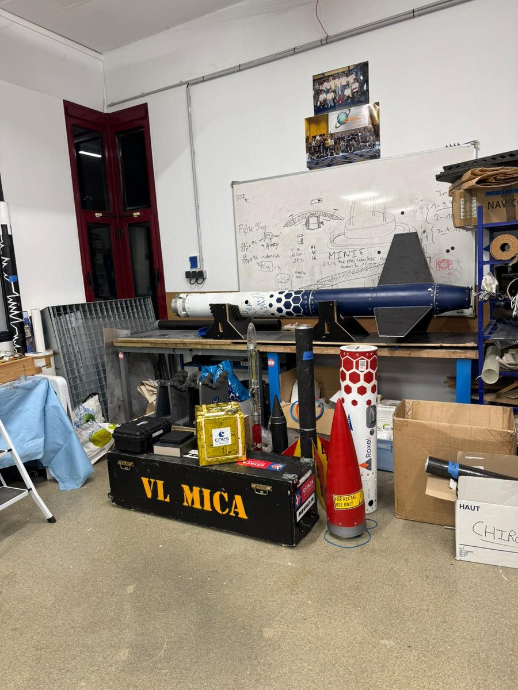
My work area at ESTACA: rocket hardware and project workshop
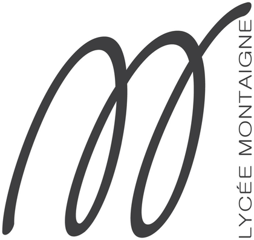
CPGE · MPSI then MP*Lycée Michel Montaigne Bordeaux
Two years of intensive preparation in mathematics and physics. My TIPE research project on satellite trilateration came from my interest in space.